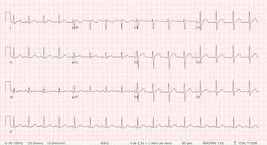

Evolución de Giacomo Guilizzoni
El paciente Giacomo Guilizzoni, de 40 años, fue atendido en el servicio de Cardiología.
Se le realizó un electrocardiograma y se le indicó reposo por 24 horas.
Se le recetó aspirina y se le indicó una dieta baja en grasas.
Se le indicó controlar la presión arterial y realizar actividad física moderada.
Se le indicó volver en 7 días para control.

Evolución de Marco Botton
El paciente Marco Botton, de 38 años, fue atendido en el servicio de Clínica.
Se le realizó un análisis de sangre y se le indicó reposo por 48 horas.
Se le recetó paracetamol y se le indicó una dieta rica en líquidos.
Se le indicó controlar la temperatura y realizar actividad física moderada.
Se le indicó volver en 14 días para control.
Evolución de Mariah Maclachlan
La paciente Mariah Maclachlan, de 35 años, fue atendida en el servicio de Ginecología.
Se le realizó una ecografía y se le indicó reposo por 72 horas.
Se le recetó ibuprofeno y se le indicó una dieta rica en fibras.
Se le indicó controlar la temperatura y realizar actividad física moderada.
Se le indicó volver en 21 días para control.
Evolución de Valerie Liberty
El paciente Valerie Liberty, de 71 años, fue atendido en el servicio de Geriatría.
Se le realizó un análisis de orina y se le indicó reposo por 96 horas.
Se le recetó paracetamol y se le indicó una dieta rica en proteínas.
Se le indicó controlar la presión arterial y realizar actividad física moderada.
Se le indicó volver en 28 días para control.